import numpy as np
import matplotlib.pyplot as plt
import pandas as pd
df = pd.read_csv('https://docs.google.com/spreadsheets/d/e/2PACX-1vTv081TwMkwVLEMqAmqkEL0xQL6HHt_3ZB5uSF0oBYEbol39djeCg3Qb2u125ajj5UTzymD6qD1MnRF/pub?output=csv')Makeup Shades and Beauty Standards/Inclusitivity: DH140 Final Project
Britney Lam
3/20/2023
Introduction
Overview
I chose create my project based on a Makeup Shade Dataset from Kaggle. This 2018 dataset is based on US, Nigeria, India, and Japan’s most popular makeup brands, their bestselling foundations, and their shade range. In this project, I will define my research questions/topic and motivations, create data visualizations using plotting methods learned in this course, analyze these findings, and discuss the implications of these results.
Research Topic and Questions
• How does best-selling brands and their foundation shade range in NON-POC countries and POC countries compare?
• What do the results reveal about their respective beauty industry and society beauty standards?
• How do the founders of beauty companies play a role in the inclusitivity of their makeup shades?
Motivation
My motivation for choosing this data set and topic comes from my own personal interest in beauty and makeup. Outside of class, I am part of the club ‘Aurum’, a beauty/skincare club on campus. In addition, the topic of foundation shades is personal to me as I had difficulty finding the correct skintone of foundation for my skintone as a POC. Furthermore, being Asian-American, I often struggle with balancing both Asian and Western beauty standards. While Asian beauty standards focus on paleness, Western beauty standards idealizes tan skin. I am interested to see how these standards can be seen through this dataset. In addition, as beauty products become more globalized, I have noticed that makeup brands have started focusing on inclustivity and pigmentation of all their products to cater towards a wide demographic. I plan to analyze U.S foundation collection shades versus Japanese, Indian, and Nigerian foundational collection shades. I would like to note that even though Nigeria is not in Asia, many countries with POC also tend to idealized paler skin.
Methods
Data Explaination
The data analyzes the foundation colors based on the hexadecimal color, hue, saturation, value, and lightness. These color analyses were done through Adobe Photoshop, using the CIE Lab Color Model. It is important to note that according to the CIELAB color model, the value 0 is defined as black while the value 100 is defined as 0. This means that the lighter the value, the darker the color. The Group Columns is referring to country. This column is from 0-7. These values and their countries/brands can be seen below.
• 0: Fenty Beauty’s PRO FILT’R Foundation Only
• 1: Make Up For Ever’s Ultra HD Foundation Only
• 2: US Best Sellers
• 3: BIPOC-recommended Brands with BIPOC Founders
• 4: BIPOC-recommended Brands with White Founders
• 5: Nigerian Best Sellers
• 6: Japanese Best Sellers
• 7: Indian Best Sellers
Data Limits
A downside to this data collection is that it only contains information about the best-selling products from a limited humber of sources. For U.S. products, sources are POPSUGAR, Amazon, StyleCaster, Refinery29, Statista, BEAUTY/crew. For recommended products for POC, sources are VIBE, Byrdie, The FADER, Allure, Glamour, Fast Company, THE CUT, Bustle, HuffPost, more.com, BuzzFeed, Refinery29. For Nigerian products, sources are BeautyInLagos, Beauty Geek, Lux Afrique, Zikel Cosmetics, Pulse.ng Pulse.ng again, Information Nigeria Women, Girly Essentials, Winnie The Make-Up Artist, Jumia Travel. In addition, it also leaves out how the best-sellng Japanese and Indian products were found. In addition, whhile this dataset is relatively new, makeup brands are always quickly evolving. Therefore, the best-selling products and shade names may be expanded in 2023.
Results and Findings
print(df) brand brand_short product product_short hex H S \
0 Maybelline mb Fit Me fmf f3cfb3 26.0 0.26
1 Maybelline mb Fit Me fmf ffe3c2 32.0 0.24
2 Maybelline mb Fit Me fmf ffe0cd 23.0 0.20
3 Maybelline mb Fit Me fmf ffd3be 19.0 0.25
4 Maybelline mb Fit Me fmf bd9584 18.0 0.30
.. ... ... ... ... ... ... ...
620 L'Oréal lo True Match tms eecfba 24.0 0.22
621 L'Oréal lo True Match tms e8c7b8 19.0 0.21
622 L'Oréal lo True Match tms f0cbb9 20.0 0.23
623 L'Oréal lo True Match tms e9c4b1 20.0 0.24
624 L'Oréal lo True Match tms eabea1 24.0 0.31
V L group
0 0.95 86 2
1 1.00 92 2
2 1.00 91 2
3 1.00 88 2
4 0.74 65 2
.. ... .. ...
620 0.93 85 7
621 0.91 83 7
622 0.94 85 7
623 0.91 82 7
624 0.92 80 7
[625 rows x 10 columns]df.describe()| H | S | V | L | group | |
|---|---|---|---|---|---|
| count | 613.000000 | 613.000000 | 613.000000 | 625.000000 | 625.000000 |
| mean | 25.314845 | 0.459494 | 0.779543 | 65.920000 | 3.472000 |
| std | 5.327852 | 0.154089 | 0.173955 | 17.512267 | 1.976529 |
| min | 4.000000 | 0.100000 | 0.200000 | 11.000000 | 0.000000 |
| 25% | 23.000000 | 0.350000 | 0.690000 | 55.000000 | 2.000000 |
| 50% | 26.000000 | 0.440000 | 0.840000 | 71.000000 | 3.000000 |
| 75% | 29.000000 | 0.560000 | 0.910000 | 79.000000 | 5.000000 |
| max | 45.000000 | 1.000000 | 1.000000 | 95.000000 | 7.000000 |
df['L'].plot(x='L',kind='hist')
plt.title('Lightness of Foundation Shades of All Countries')
plt.xlabel('Foundation Lightness')
plt.show()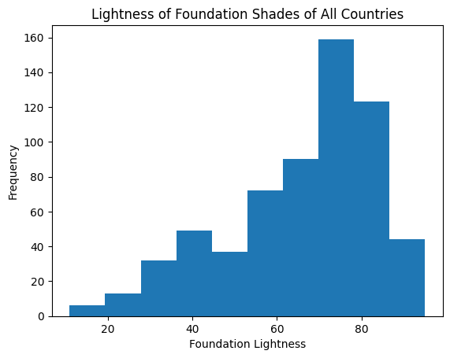
After plotting a histogram of the frequency of Lightness of all countries (0-7), the majority of the foundation colors are between 60-80 L. This indicates that a majority of foundation shades are lighter shades, indicating that the these brands are catering towards individuals of a lighter skin color.
df['group'].plot(x='group',kind='hist')
plt.title('Frequency of Countries Represented')
plt.xlabel('Countries')
plt.show()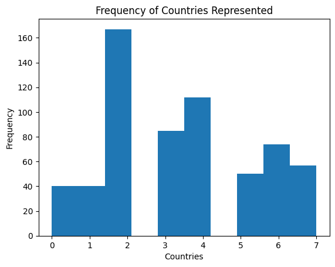
df['group'].plot(kind='box')<AxesSubplot: >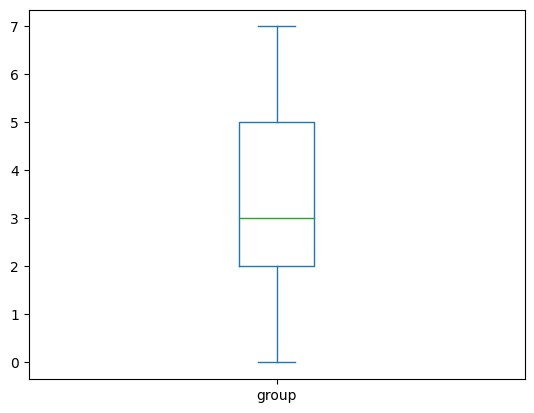
df.groupby(['group'])['group'].count().plot(kind='pie')<AxesSubplot: ylabel='group'>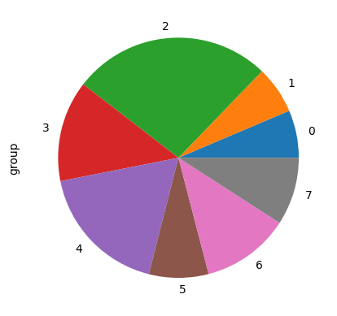
df.loc[df['group'] ]| brand | brand_short | product | product_short | hex | H | S | V | L | group | |
|---|---|---|---|---|---|---|---|---|---|---|
| 2 | Maybelline | mb | Fit Me | fmf | ffe0cd | 23.0 | 0.20 | 1.00 | 91 | 2 |
| 2 | Maybelline | mb | Fit Me | fmf | ffe0cd | 23.0 | 0.20 | 1.00 | 91 | 2 |
| 2 | Maybelline | mb | Fit Me | fmf | ffe0cd | 23.0 | 0.20 | 1.00 | 91 | 2 |
| 2 | Maybelline | mb | Fit Me | fmf | ffe0cd | 23.0 | 0.20 | 1.00 | 91 | 2 |
| 2 | Maybelline | mb | Fit Me | fmf | ffe0cd | 23.0 | 0.20 | 1.00 | 91 | 2 |
| ... | ... | ... | ... | ... | ... | ... | ... | ... | ... | ... |
| 7 | Maybelline | mb | Fit Me | fmf | e2b597 | 24.0 | 0.33 | 0.89 | 77 | 2 |
| 7 | Maybelline | mb | Fit Me | fmf | e2b597 | 24.0 | 0.33 | 0.89 | 77 | 2 |
| 7 | Maybelline | mb | Fit Me | fmf | e2b597 | 24.0 | 0.33 | 0.89 | 77 | 2 |
| 7 | Maybelline | mb | Fit Me | fmf | e2b597 | 24.0 | 0.33 | 0.89 | 77 | 2 |
| 7 | Maybelline | mb | Fit Me | fmf | e2b597 | 24.0 | 0.33 | 0.89 | 77 | 2 |
625 rows × 10 columns
print(df.group)0 2
1 2
2 2
3 2
4 2
..
620 7
621 7
622 7
623 7
624 7
Name: group, Length: 625, dtype: int64df.loc[df['group'] == 2]| brand | brand_short | product | product_short | hex | H | S | V | L | group | |
|---|---|---|---|---|---|---|---|---|---|---|
| 0 | Maybelline | mb | Fit Me | fmf | f3cfb3 | 26.0 | 0.26 | 0.95 | 86 | 2 |
| 1 | Maybelline | mb | Fit Me | fmf | ffe3c2 | 32.0 | 0.24 | 1.00 | 92 | 2 |
| 2 | Maybelline | mb | Fit Me | fmf | ffe0cd | 23.0 | 0.20 | 1.00 | 91 | 2 |
| 3 | Maybelline | mb | Fit Me | fmf | ffd3be | 19.0 | 0.25 | 1.00 | 88 | 2 |
| 4 | Maybelline | mb | Fit Me | fmf | bd9584 | 18.0 | 0.30 | 0.74 | 65 | 2 |
| ... | ... | ... | ... | ... | ... | ... | ... | ... | ... | ... |
| 162 | Covergirl + Olay | oc | Simply Ageless | sa | eac7ab | NaN | NaN | NaN | 83 | 2 |
| 163 | Covergirl + Olay | oc | Simply Ageless | sa | eabe9e | NaN | NaN | NaN | 80 | 2 |
| 164 | Covergirl + Olay | oc | Simply Ageless | sa | e5b39a | NaN | NaN | NaN | 77 | 2 |
| 165 | Covergirl + Olay | oc | Simply Ageless | sa | e7b590 | NaN | NaN | NaN | 78 | 2 |
| 166 | Covergirl + Olay | oc | Simply Ageless | sa | f7dcca | NaN | NaN | NaN | 90 | 2 |
167 rows × 10 columns
df.loc[df ['group'] == 2].mean()/tmp/ipykernel_216/2520333303.py:1: FutureWarning: The default value of numeric_only in DataFrame.mean is deprecated. In a future version, it will default to False. In addition, specifying 'numeric_only=None' is deprecated. Select only valid columns or specify the value of numeric_only to silence this warning.
df.loc[df ['group'] == 2].mean()H 25.438710
S 0.463419
V 0.768194
L 65.766467
group 2.000000
dtype: float64df.loc[df ['group'] == 0].mean()/tmp/ipykernel_216/1076504179.py:1: FutureWarning: The default value of numeric_only in DataFrame.mean is deprecated. In a future version, it will default to False. In addition, specifying 'numeric_only=None' is deprecated. Select only valid columns or specify the value of numeric_only to silence this warning.
df.loc[df ['group'] == 0].mean()H 25.70000
S 0.47925
V 0.78325
L 65.62500
group 0.00000
dtype: float64df.loc[df ['group'] == 1].mean()/tmp/ipykernel_216/2431416835.py:1: FutureWarning: The default value of numeric_only in DataFrame.mean is deprecated. In a future version, it will default to False. In addition, specifying 'numeric_only=None' is deprecated. Select only valid columns or specify the value of numeric_only to silence this warning.
df.loc[df ['group'] == 1].mean()H 20.17500
S 0.35075
V 0.81500
L 70.02500
group 1.00000
dtype: float64df.loc[df ['group'] == 5].mean()/tmp/ipykernel_216/110568729.py:1: FutureWarning: The default value of numeric_only in DataFrame.mean is deprecated. In a future version, it will default to False. In addition, specifying 'numeric_only=None' is deprecated. Select only valid columns or specify the value of numeric_only to silence this warning.
df.loc[df ['group'] == 5].mean()H 22.0000
S 0.5568
V 0.6740
L 53.3000
group 5.0000
dtype: float64df.loc[df ['group'] == 6].mean()/tmp/ipykernel_216/3343044967.py:1: FutureWarning: The default value of numeric_only in DataFrame.mean is deprecated. In a future version, it will default to False. In addition, specifying 'numeric_only=None' is deprecated. Select only valid columns or specify the value of numeric_only to silence this warning.
df.loc[df ['group'] == 6].mean()H 27.581081
S 0.413919
V 0.901216
L 76.959459
group 6.000000
dtype: float64df.loc[df ['group'] == 7].mean()/tmp/ipykernel_216/1881251887.py:1: FutureWarning: The default value of numeric_only in DataFrame.mean is deprecated. In a future version, it will default to False. In addition, specifying 'numeric_only=None' is deprecated. Select only valid columns or specify the value of numeric_only to silence this warning.
df.loc[df ['group'] == 7].mean()H 25.526316
S 0.393509
V 0.865088
L 74.228070
group 7.000000
dtype: float64df.loc[df ['group'] == 3].mean()/tmp/ipykernel_216/1223782151.py:1: FutureWarning: The default value of numeric_only in DataFrame.mean is deprecated. In a future version, it will default to False. In addition, specifying 'numeric_only=None' is deprecated. Select only valid columns or specify the value of numeric_only to silence this warning.
df.loc[df ['group'] == 3].mean()H 24.788235
S 0.512941
V 0.674235
L 56.035294
group 3.000000
dtype: float64df.loc[df ['group'] == 4].mean()/tmp/ipykernel_216/1315928275.py:1: FutureWarning: The default value of numeric_only in DataFrame.mean is deprecated. In a future version, it will default to False. In addition, specifying 'numeric_only=None' is deprecated. Select only valid columns or specify the value of numeric_only to silence this warning.
df.loc[df ['group'] == 4].mean()H 27.116071
S 0.465536
V 0.784375
L 66.401786
group 4.000000
dtype: float64
data = {'Fenty Beauty': 65.62500, 'Makeup Forever':70.02500, 'US Best-Sellers':65.766467,
}
countries = list(data.keys())
lightness = list(data.values())
fig = plt.figure(figsize = (10, 5))
plt.bar(countries, lightness, color ='maroon',
width = 0.2)
plt.xlabel("Western Brands")
plt.ylabel("Average of Foundation Lightness")
plt.title("Average of Foundation Lightness of Western Brands")
plt.show()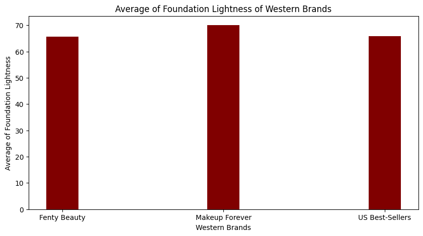
data = {'Nigeria': 53.3000, 'Japan': 76.959459, 'India': 74.228070,
}
countries = list(data.keys())
lightness = list(data.values())
fig = plt.figure(figsize = (10, 5))
plt.bar(countries, lightness, color ='orange',
width = 0.2)
plt.xlabel("Eastern Brands")
plt.ylabel("Average of Foundation Lightness")
plt.title("Average of Foundation Lightness of Eastern Brands")
plt.show()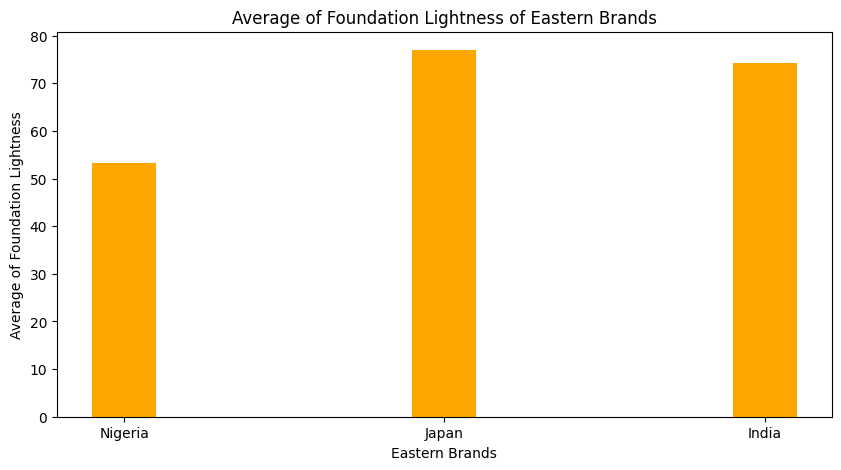
data = {'BIPOC-recommended Brands with BIPOC Founders': 56.035294, 'BIPOC-recommended Brands with White Founders': 66.401786
}
countries = list(data.keys())
lightness = list(data.values())
fig = plt.figure(figsize = (10, 5))
plt.bar(countries, lightness, color ='blue',
width = 0.2)
plt.xlabel("BIPOC Founded vs. White Founded Makeup Brands")
plt.ylabel("Average of Foundation Lightness")
plt.title("Average of Foundation Lightness of BIPOC Founded vs. White Founded Makeup Brands")
plt.show()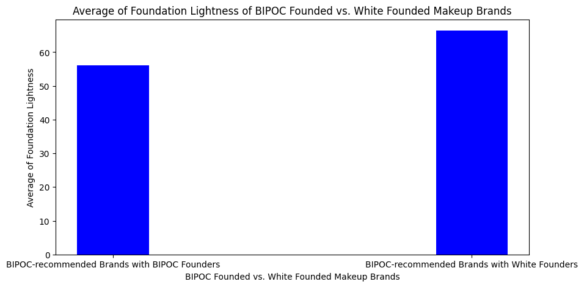
df.loc[df['group']== 0].plot(x='S',
y='L',
kind='scatter')
plt.title('Saturation and Lightness of Fenty Foundation Shades')
plt.show()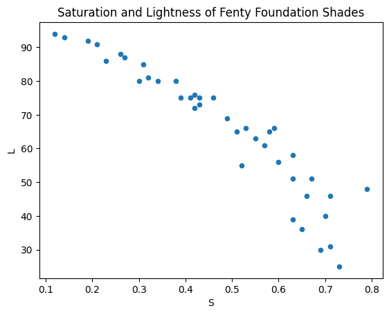
df.loc[df['group']== 1 ].plot(x='S',
y='L',
kind='scatter')
plt.title('Saturation and Lightness of Makeup Forever Foundation Shades')
plt.show()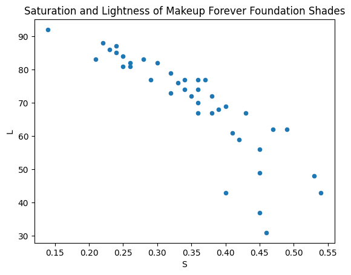
df.loc[df['group']== 2 ].plot(x='S',
y='L',
kind='scatter')
plt.title('Saturation and Lightness of U.S. Best-Selling Foundations')
plt.show()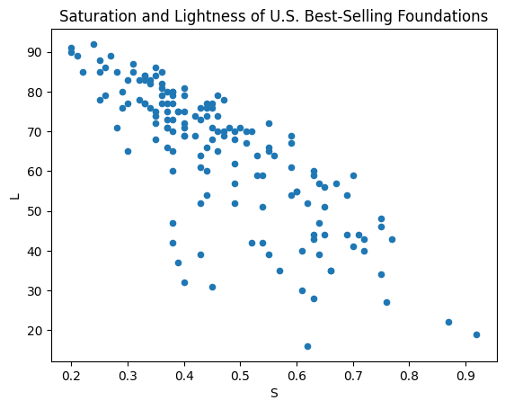
df.loc[df['group']== 3 ].plot(x='S',
y='L',
kind='scatter')
plt.title('Saturation and Lightness of BIPOC-recommended Brands with BIPOC Founders')
plt.show()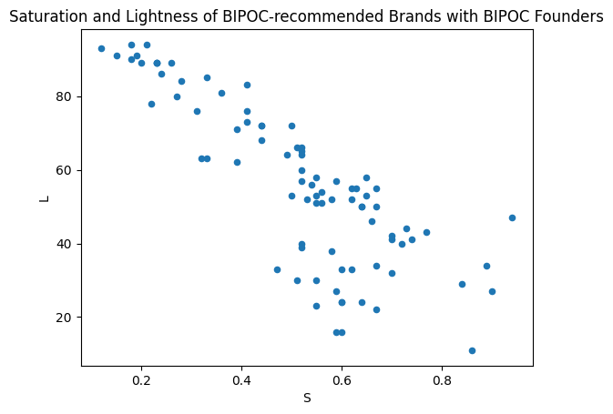
df.loc[df['group']== 4 ].plot(x='S',
y='L',
kind='scatter')
plt.title('Saturation and Lightness of BIPOC-recommended Brands with White Founders')
plt.show()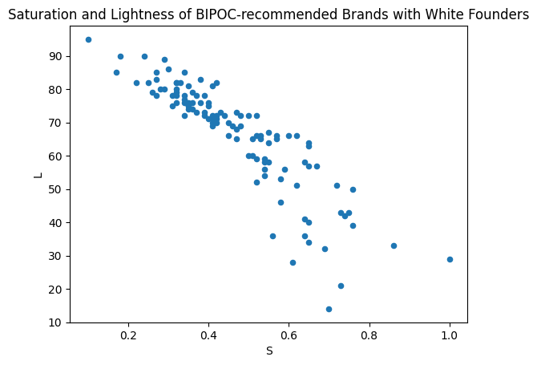
df.loc[df['group']== 5 ].plot(x='S',
y='L',
kind='scatter')
plt.title('Saturation and Lightness of Nigerian Best-Sellers')
plt.show()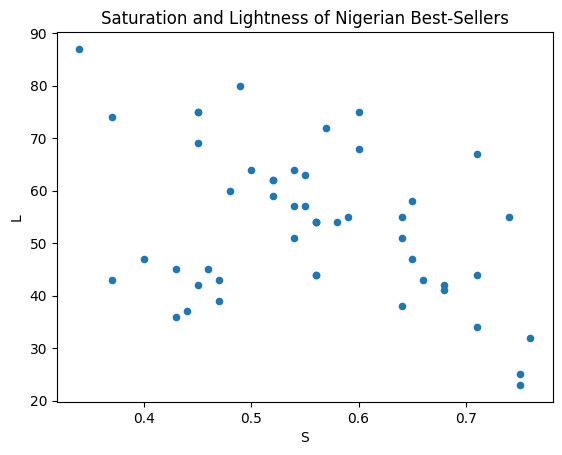
df.loc[df['group']== 6 ].plot(x='S',
y='L',
kind='scatter')
plt.title('Saturation and Lightness of Japanese Best-Sellers')
plt.show()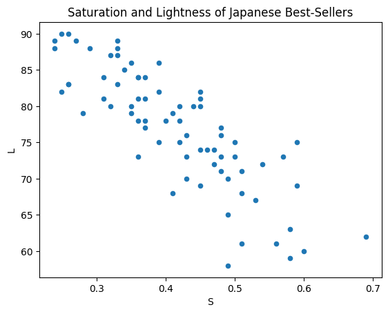
df.loc[df['group']== 7 ].plot(x='S',
y='L',
kind='scatter')
plt.title('Saturation and Lightness of Indian Best-Sellers')
plt.show()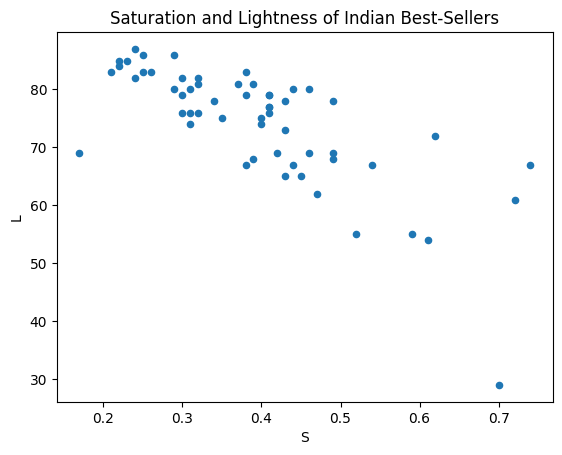
df['L'].plot(kind='box')<AxesSubplot: >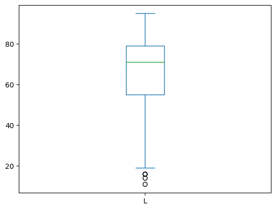